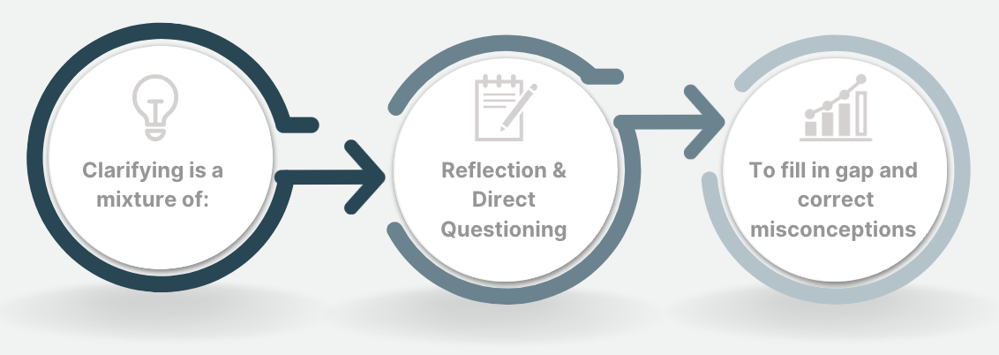

Clarifying
Clarifying is a communication method that helps one person to understand the intended meaning of a message. By being on the same page, people can also avoid misunderstandings. Clarifying often overlaps with the participating, reflecting, and questioning strategies.
Communication can be complicated, yet a necessary thing to navigate. How we communicate is often affected by our backgrounds, settings, and knowledge on the topic. Clarifying helps us navigate this by understanding what the other person means through asking questions. Furthermore, it helps us participate when we gain the understanding needed to contribute to the conversation.
As mentioned before, questions are important to utilize this communication strategy, and must be done as non-judgmentally as possible. The two types of questions described by this source are open and closed. Closed questions often result in a yes or no response. They can be used to confirm details or understanding of a topic, and often simplify a conversation. On the other hand, open questions allow for different types of clarification. Often, they allow the person speaking to expand on a specific detail that was unclear, or state their opinion or feelings about something. To ask an open question, you usually start with “when”, “where”, “how”, or “why”. For example, if someone was learning a new job and they wanted to see what their coworkers thought of the workplace they might ask, “How do you like working here?” This would allow them to gain honest opinions that can’t usually be asked of the boss, and discover any potential problem areas in their work.
Clarification is a very useful strategy and is often used to summarize and confirm messages sent in communication. People use this strategy in day-to-day life when they ask for repeated messages, examples, or to tell the speaker they didn’t understand the message. In the many little ways it’s employed in daily conversation, we can all benefit from understanding how clarification allows us to understand and reflect on different messages of conversations.
This resource is a clear but short explanation of clarification. It offers examples of questions to use for clarifying, but only covers open and closed question types. The article can be used as a jumping off point to build on understanding the clarifying strategy, but shouldn’t be used as the only source of knowledge.
